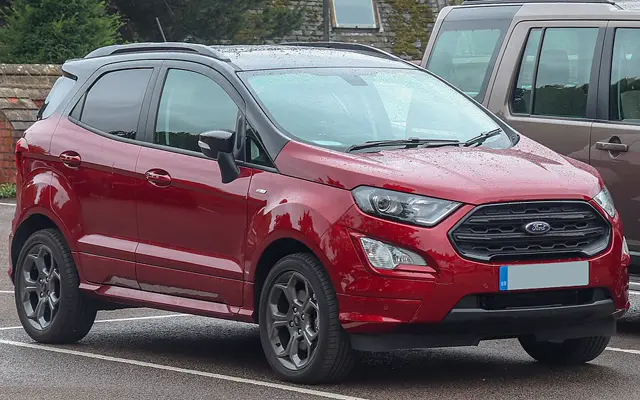

Par Motor › Precios por modelo › Ford EcoSport
Precio de segunda mano · noviembre de 2026¿Cuánto vale un Ford EcoSport de segunda mano?

Precio justo estimado de un Ford EcoSport usado en España, año por año, con los kilómetros normales para su edad y en buen estado: de 7.900 € a 13.300 €. Para tasar el tuyo con sus kilómetros reales y su estado, usa el tasador gratis.
Precios del Ford EcoSport por año
EcoSport (2014–2022)
Precio de nuevo: 1.0 EcoBoost 125 CV, 19.000 € · 1.5 TDCi 100 CV, 20.000 € · 1.0 EcoBoost 100 CV, 18.000 €
| Año | Km normales | 1.0 EcoBoost 125 CV · Gasolina | 1.5 TDCi 100 CV · Diésel | 1.0 EcoBoost 100 CV · Gasolina |
|---|---|---|---|---|
| 2022 | 65.000 km | 13.300 € | 12.300 € | 12.600 € |
| 2021 | 80.000 km | 11.800 € | 11.300 € | 11.200 € |
| 2020 | 95.000 km | 10.300 € | 11.200 € | 9.700 € |
| 2019 | 100.000 km | 9.700 € | 11.100 € | 9.100 € |
| 2018 | 100.000 km | 9.400 € | 10.900 € | 8.900 € |
| 2017 | 100.000 km | 9.100 € | 10.600 € | 8.700 € |
| 2016 | 100.000 km | 8.900 € | 9.900 € | 8.400 € |
| 2015 | 100.000 km | 8.600 € | 9.200 € | 8.100 € |
| 2014 | 100.000 km | 8.300 € | 8.600 € | 7.900 € |
En las primeras unidades los manguitos de refrigeración se agrietaban y el motor se sobrecalentaba, a veces con la culata dañada. Además lleva la correa de distribución bañada en aceite, que se degrada y puede obstruir el engrase. Comprueba con Ford (por el bastidor) que se hicieron las campañas de revisión y que el coche no pierde refrigerante.
Kilómetros normales: 15.000 al año en gasolina, híbridos y eléctricos, y 20.000 en diésel, con un máximo de 100.000 km (por encima no tasamos: el precio depende demasiado del historial de cada coche). Cifras redondeadas a 100 €.
Preguntas frecuentes
¿Cuánto vale un Ford EcoSport de segunda mano?
Según el año, la versión y los kilómetros, un Ford EcoSport usado vale hoy de 7.900 € a 13.300 € en España. El más barato de nuestra tabla es un 1.0 EcoBoost de 2014 (7.900 €) y el más caro un 1.0 EcoBoost de 2022 (13.300 €). Son precios justos estimados entre particulares y profesionales, con los kilómetros normales para su edad y en buen estado.
¿Cuánto valor pierde un Ford EcoSport al año?
Con unos años encima, un Ford EcoSport pierde alrededor de un 7 % de su valor cada año (calculado sobre el 1.0 EcoBoost de la generación EcoSport). Los primeros años la caída es mayor y a partir de los 70.000 km se acelera.
¿Qué motorizaciones tiene el Ford EcoSport?
En nuestra base de datos hay versiones gasolina y diésel, en 1 generación: EcoSport.
¿Qué motores del Ford EcoSport dan problemas?
Ojo con el Ford 1.0 EcoBoost (1.0 EcoBoost, 2014–2019): son motores con fallos graves y muy extendidos. Antes de comprar uno, pide el historial de mantenimiento y comprueba si ya se hizo la reparación. El resto de motores no tiene problemas fuera de lo normal.
¿Cómo sé si me piden demasiado por un Ford EcoSport?
Abre el tasador de Par Motor, elige el Ford EcoSport, el año y los kilómetros reales, y escribe lo que te piden. Te diremos si está por debajo del precio justo (chollo) o por encima (caro). Es gratis y no pide registro ni matrícula.
Otros Ford
- B-Max
- C-Max
- Capri
- Explorer EV
- Fiesta
- Focus
- Ka y Ka+
- Kuga
- Mondeo
- Mustang
- Mustang Mach-E
- Puma
- Ranger
- S-Max y Galaxy
- Tourneo Connect y Courier
Compara su coste real
El precio de compra es solo una parte. Mira cuánto te costaría al mes con combustible, seguro, neumáticos, mantenimiento y lo que pierde de valor.
Abrir el comparador →